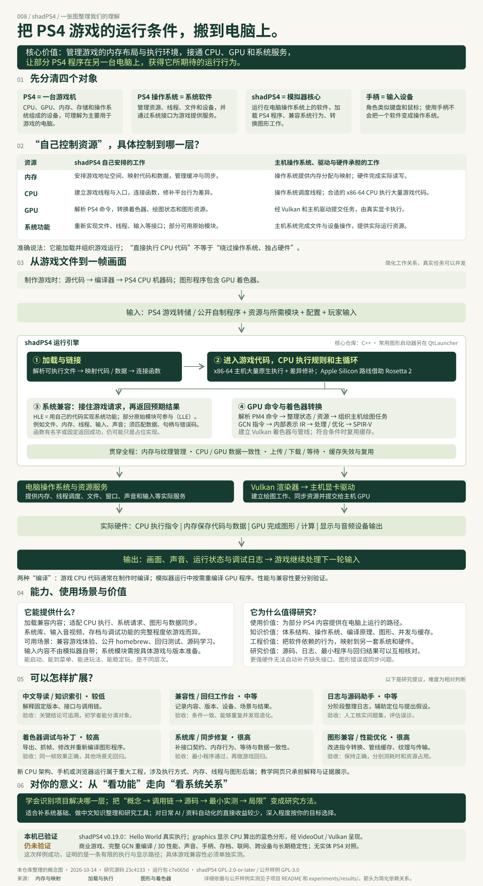

PS4 游戏机
索尼的 PlayStation 4 家用游戏主机。里面有 CPU、GPU、内存、存储和操作系统，可以理解为一台主要为玩游戏设计的电脑。
PS4 是设备名称；“SP4”是我们讨论中的误写。
shadPS4 利用能直接执行的游戏代码，重新实现游戏依赖的系统接口，再转换 PS4 的图形任务，让部分 PS4 游戏在电脑上运行。
汇总资源控制边界、能力、原理、价值、扩展方向及实测范围。点击图片放大，或下载高清版本查看。

模拟器安排游戏内存、执行入口和图形任务；主机操作系统、驱动和硬件提供实际资源。其核心价值是兼容 PS4 程序所依赖的系统与图形行为，从而在电脑上加载并运行兼容内容。
这是我们讨论中最容易混在一起的三个层次。先把对象分清，后面的原理就容易理解。
索尼的 PlayStation 4 家用游戏主机。里面有 CPU、GPU、内存、存储和操作系统，可以理解为一台主要为玩游戏设计的电脑。
PS4 是设备名称；“SP4”是我们讨论中的误写。
管理内存、线程、文件、输入和设备资源，为游戏提供系统接口。游戏依赖这些接口，但游戏本身也是独立程序。
在电脑上提供游戏期待的运行行为：加载程序、实现系统库、转换图形工作。这个仓库是核心；常用图形界面在独立的 QtLauncher。
手柄与键盘、鼠标一样，都是输入设备。普通电脑也可以连接手柄，PS4 游戏的含义是“为 PS4 平台制作的游戏版本”。
| 层次 | 普通电脑 | PS4 | 电脑 + shadPS4 |
|---|---|---|---|
| 实际硬件 | 电脑 CPU、GPU、内存 | PS4 CPU、GPU、内存 | 仍使用电脑硬件 |
| 系统服务 | Windows / Linux 等 | PS4 系统及系统库 | 电脑系统 + shadPS4 兼容实现 |
| 游戏程序 | 电脑平台版本 | PS4 平台版本 | 尝试运行 PS4 版本 |
| 图形工作 | 经电脑图形接口和驱动提交 | PS4 图形接口与 GPU 命令 | 转换 PS4 命令和着色器，再交给电脑显卡 |
| 输入方式 | 键鼠或手柄 | 主要用手柄 | 手柄、键盘、鼠标映射 |
CPU 与 GPU 是硬件；操作系统、游戏、编译器和模拟器是软件。系统把游戏加载进内存后，CPU 持续执行游戏代码。绘图任务通过图形接口和驱动交给 GPU。操作系统同时提供资源管理和输入、文件等服务。
把“源码里有接口”“能进入游戏”“可以正常玩”分开判断。
输入：兼容的 PS4 游戏转储或自制程序、必要的系统模块、配置和玩家输入。核心也支持按路径启动 ELF 可执行文件。
输出：运行中的游戏窗口、图像和声音，以及用于排查的日志；部分功能还涉及本地存档、截图和调试信息，完整性取决于具体游戏。
平台：官方主要提供 Windows、Linux 和 macOS 使用路线；仓库描述也列出 FreeBSD。当前 macOS 指南要求 macOS 26、Apple Silicon 和 Rosetta 2，Intel Mac 不在支持范围。
QtLauncher 提供游戏列表、版本管理和配置入口；核心仓库主要提供实际运行引擎及命令行。两者的职责不同。
官方展示《Bloodborne》《Dark Souls Remastered》《Red Dead Redemption》等运行案例。这证明存在运行成果，不能直接推断你的游戏版本和硬件也有相同结果。
官方 QtLauncher ↗官方兼容报告按游戏编号（CUSA）、游戏版本、模拟器版本和操作系统记录。更新后还需复测，不能只凭一张截图或视频判断“完全兼容”。查看官方分类与记录 ↗
当前官方最低要求包括至少 4 核 6 线程、2.5 GHz 以上且支持 x86-64-v3 的 CPU，至少 8GB 内存、2GB 显存，以及 Vulkan 1.3 和所需扩展。实际效果还受游戏、驱动和模拟准确性影响。游戏、更新和所需系统模块按官方要求从自己拥有的内容取得；本项目不附带这些文件。
官方入门与要求 ↗游戏以为自己还在原平台，是因为模拟器尽可能返回它期待的结果。这是理解 shadPS4 的核心。
加载器解析游戏可执行文件和模块，按程序要求安排内存，把代码、数据和线程所需信息放好；链接器处理重定位与函数引用，再进入游戏入口。“读取一个文件”与“把它变成可执行进程”是不同工作。
源码：src/emulator.cpp → src/core/module.cpp → src/core/linker.cpp
在合适的 x86-64 主机上，大量 PS4 游戏机器码可以原生执行。shadPS4 处理调用约定、线程局部存储、异常以及部分指令行为的差异。原生执行有助于降低指令翻译成本，但系统接口和 GPU 仍然必须兼容；Apple Silicon 路线借助 Rosetta 2。
源码：RunMainEntry、src/core/cpu_patches.cpp、src/core/tls.cpp
例如游戏调用 sceKernelOpen 打开模型文件。模拟器需要解释 PS4 路径、打开标志、文件句柄和错误码，使用主机资源执行操作，再按原接口规则返回结果。它还提供线程、内存、音视频和输入等库的不同程度实现。
HLE：用自己的代码重新实现原系统功能。LLE：按官方文档的称呼，加载部分从主机取得的原始系统模块。它们可以共同参与运行。接口有名字或返回“成功”，不代表真实行为已经完整实现；部分函数仍是占位实现。
源码：src/core/libraries/、符号解析和模块加载
游戏通过 PS4 图形接口组织并提交命令缓冲区。shadPS4 解析 AMD GPU 的 PM4 命令包，处理寄存器状态、绘制、计算和数据搬运，再组织对应的主机绘图工作。渲染由游戏提交的任务驱动。
源码：gnmdriver.cpp → video_core/amdgpu/liverpool.cpp → Vulkan 渲染器
着色器负责顶点、像素或计算任务。shadPS4 将 AMD GCN 指令解码成内部表示，构造控制流、执行优化和资源处理，再输出 SPIR-V，建立 Vulkan 着色器和绘图管线。不同显卡支持的特性有差异，因此还要转换不受支持的行为。
游戏的 CPU 程序在制作阶段已经编译；这里是在运行时按需重编译 GPU 程序。缓存可复用已有着色器和管线，但新组合或新状态仍可能需要编译。
源码：shader_recompiler/recompiler.cpp、renderer_vulkan/vk_pipeline_cache.cpp
CPU 算出的模型数据要及时被 GPU 读取，GPU 写回的数据也可能被 CPU 使用。模拟器维护缓冲区、纹理、数据格式和缓存，并安排上传、下载、失效和等待。数据过期或等待顺序错误，可能表现为花屏、闪烁、卡住或崩溃。
源码：core/memory.cpp、buffer_cache/、texture_cache/、vk_scheduler.cpp
主机驱动和显卡执行转换后的工作，显示图像；音频和输入通过对应实现流动。多个任务可重叠执行：GPU 绘制当前画面时，CPU 可能已经计算下一轮。把某一项跑通，还不能替代整个游戏长时间运行的验证。
性能回答“做得多快”，兼容性回答“有没有按游戏期待的规则做”。再强的 CPU 和 GPU，也无法自动补齐未实现的系统行为、错误的着色器转换或内存同步。
选择例子并逐步推进，观察游戏的请求在哪一层被接住。
点两次“绘制相同效果”，观察第一次编译与后续缓存复用。这里演示缓存思想，实际缓存条件更复杂。
尚未绘制；教学缓存为空。
浏览器教学、本机执行和官方游戏案例，分别提供不同层次的证据。
| 检查项目 | 结果 | 证据与范围 |
|---|
以下入口来自固定版本 README。它们是上游的视频，不是我们本机录制的结果；具体配置、版本和测试范围以视频及兼容报告为准。
目前没有用户自有的商业游戏转储和系统模块。公开示例适合观察启动、CPU 执行、系统接口或图形输出；它跑通也不能证明商业游戏兼容。若以后具备自己的游戏和所需模块，可沿用下面的验证表继续实测。
公开 graphics 程序在 CPU 上计算 Mandelbrot 分形的每个像素，写入帧缓冲，再调用 PS4 VideoOut 接口。shadPS4 接住显示请求，使用 Vulkan 呈现到电脑窗口。
这是一条实际跑通的显示路径。它没有经过商业 3D 游戏的完整图形链，也没有验证 GCN 着色器重编译。
公开样例源码 ↗子项目包含复现脚本，下载和运行文件放在独立的本地目录。Windows 首次准备需要下载约 200 MB 官方开源发布包。
在仓库根目录打开终端： python projects/008-shadps4/experiments/run_public_example.py --prepare-only python projects/008-shadps4/experiments/run_public_example.py --sample graphics --driver-select "*nv*" 本机 NVIDIA 环境验证使用了进程级驱动筛选；其他设备应按自己的驱动调整或省略。 关闭模拟器窗口或按 Ctrl+C 停止。详细说明见子项目 experiments/。
源码研究提交为 23c4133，正式运行包日志提交为 c7e065d，两者分别记录。没有改变系统驱动设置。
这个项目的价值，在于让多个基础领域在一个真实系统中相遇。
| 知识 | 在这里遇到的问题 | 可迁移的理解 |
|---|---|---|
| 计算机体系结构 | 为什么同一种指令集仍有行为差异？ | 区分指令、调用约定、线程环境与硬件语义 |
| 操作系统 | 怎样让一个程序找到文件、获得内存并启动线程？ | 理解接口契约、资源管理和错误处理 |
| 编译原理 | 怎样把 GCN 程序转换成 SPIR-V？ | 解码、控制流、中间表示、优化和目标代码 |
| 图形学 | 为什么纹理错误、阴影丢失或几何形状爆开？ | 理解管线、格式、坐标、着色器和数据状态 |
| 并发与缓存 | CPU 与 GPU 何时能看到对方写的数据？ | 同步、数据一致性、缓存失效和执行顺序 |
| 软件工程 | 怎样确认一次改动真的修好了问题？ | 固定版本、最小复现、证据和回归测试 |
适合带着一个问题研究，例如“打开文件的请求最终去了哪里”。对于没有 C++、操作系统或图形基础的读者，先沿一条路径阅读，比从头通读整个工程更有效。
以下判断基于你目前收集 GitHub 项目、研究能力与原理、建设中文导读和演示的目标；没有假设你从事游戏开发。
一个项目可能提供界面、流程、兼容层、编译器或实际计算能力。通过 shadPS4，你能分辨“把系统接起来”与“系统本身具备能力”，今后看 AI、RAG、网络和其他项目时，也能更准确地识别核心价值。
已有项目偏资料、AI 与网络工具；模拟器提供了一类不同的复杂软件。这里可以形成“概念 → 调用链 → 源码证据 → 最小运行 → 局限”的研究方法，并积累可供后续知识库使用的材料。
崩溃可能来自缺失接口，花屏可能来自格式转换，卡住可能来自同步。学习按阶段定位问题，比把所有问题都归为“电脑性能不够”更有帮助，也能迁移到普通软件排查。
想玩某款游戏，就优先查兼容报告；想学底层系统，适合长期研究；若当前主要目标仍是资料整理、种植知识或 AI 自动化，它对日常任务的直接收益较少，可先完成一次理解与最小实验，把时间留给更相关的项目。
例如把固定版本源码、函数关系和运行日志整理成可追溯的研究助手。模型可以帮助查找和提出假设，诊断仍需用源码与实际运行证据核对；本页没有实现或验证自动诊断。
这些是我们的研究提议。难度是相对判断，不代表上游承诺或已经实现的成果。
| 方向 / 难度 | 具体可以做什么 | 怎样验收 |
|---|---|---|
| 中文导读与知识索引 较低 | 按源码版本解释接口、调用链、术语和兼容报告；为研究库补来源和复现记录 | 每个重要结论有可定位依据；初学者能说清三个对象和三条关键路径 |
| 兼容性与回归工作台 中等 | 记录游戏编号、版本、配置、设备、启动阶段、画面和稳定性；比较更新前后 | 同一内容、场景和条件可重复；能发现退化；不同实验结果不混在一起 |
| 日志阅读助手 中等 | 按加载、系统、图形、同步阶段聚合日志，链接固定版本源码，建议最小复现 | 用人工确认的问题集测分类和误诊；不把占位返回成功当作真实支持 |
| 着色器调试与补丁 较高 | 导出着色器、抓帧、修改和重新编译；研究某个缺失效果 | 同一帧前后对比；效果正确且其他场景无回归；注明补丁适用版本 |
| 系统库与同步修复 很高 | 实现缺失接口，修正错误码、内存行为和 CPU / GPU 数据同步 | 最小程序验证接口契约，再做真实游戏回归和跨平台验证 |
| 图形兼容与性能 很高 | 改进指令转换、管线缓存、纹理和缓冲管理，降低重复编译与传输 | 保持结果正确，记录帧时间、编译耗时和资源占用；冷热缓存分别比较 |
手机、浏览器或新的 CPU 架构支持，会牵涉程序执行方式、内存模型、线程和图形后端，属于重大工程。静态网页适合解释原理和展示证据；本页的动画与真实 PS4 执行之间仍有完整运行引擎的距离。
着色器导出与补丁已有上游基础：官方补丁说明 ↗。文档配置名称可能滞后，实际使用需核对所选版本的帮助和配置。
每次只验证一个明确问题，保留输入、版本、输出和失败位置。
选一个公开自制程序或自己拥有的游戏，记录源码/游戏版本、模拟器版本、设备和驱动。验收：其他人知道你到底测试了什么。
检查格式、入口、模块、路径和日志。验收：明确是加载失败，还是已经进入游戏代码。
从读取文件或分配内存开始，定位导入函数、兼容实现和返回值。验收：解释输入如何变成主机操作及结果。
找出命令提交、着色器编译和最终显示；有条件时抓取一帧。验收：区分“CPU 在运行”“GPU 有工作”“画面正确”。
只修一个问题，保持其他条件一致。验收：有前后证据、重复运行结果及未覆盖场景。
完成“一个公开程序 → 一次 CPU / 系统请求 → 一份真实记录”，再逐步进入第一帧。网页可以承载这些研究结果，原生模拟器承担实际运行。
研究日期：2026-10-14。固定源码提交：23c41333822fe8eca4c609b43119180af63ae4ac。实际运行版本与结果单独记录。
| 问题 | 主要源码 / 文档 | 我们核对的内容 |
|---|
ELF 是可执行文件格式；模块是可加载的程序或库；链接把引用接到实际地址；ABI 是程序之间约定的调用、数据和二进制规则。
HLE 重新实现系统功能；官方称 LLE 为使用原始系统模块的方式；占位实现可能只返回固定值或记录“未实现”，不代表完整功能。
PM4 是 GPU 命令包格式；GCN 是这里涉及的 AMD GPU 指令架构；着色器是由 GPU 执行的程序，负责图形或计算任务。
IR 是编译器内部表示；SPIR-V 是图形与计算的中间代码形式；Vulkan 是主机图形接口；管线组合着色器与绘图状态，决定怎样完成任务。
缓存保存可复用结果；同步保证数据与执行顺序正确；帧率描述每秒画面数量，帧时间描述一帧花多久。教学网页未测真实游戏帧率。
上游源码标注 GPL-2.0-or-later，根许可证提供 GPL v2 文本。引用和分发上游代码或程序时遵循对应许可与第三方条款；索尼系统模块和游戏内容有各自权利，不由模拟器许可证覆盖。
本页的文字、教学代码和讲解图由本仓库编写；官方案例只链接来源。公开示例的来源和许可见实际运行记录。
源码核对、浏览器交互和原生程序执行分别记录。尚未获得自有商业游戏转储，因此没有商业游戏本机兼容性、帧率、声音或长时间稳定性结论。
本页的解释和公开样例记录均保留版本与范围。查看完整研究文档与复现说明 ↗